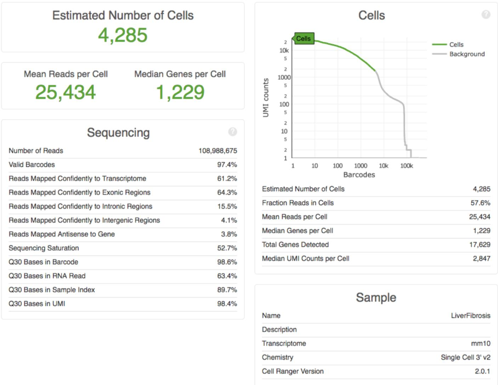

普罗亭-10X Genomics单细胞转录组测序分析项目概览
一.数据质控
1.整体质控
10x Genomics 官方分析软件 Cell Ranger[1]对原始数据进行数据质量统计，并比 对参考基因组，统计展示细胞捕获数、细胞基因检测中位数、有效数据率、测序饱和 度、基因组 Mapping 率等信息。
2.细胞基因数、UMI 数、线粒体基因数过滤
捕获到的细胞中，有些细胞为死细胞或 doublets。一般来说，死细胞检测到的基 因数很低且线粒体基因比例较高，doublets 检测到的基因数会较多。因此一般根据每 个细胞检测到基因数的上限与下限和每个细胞中检测到的线粒体基因比例，进行细胞 质控过滤，以保证后续分析结果的可靠性。
3.UMI 数量与基因数量相关性分析
随着测序数据量的增加，单细胞检测到的基因数量和UMI的数量也随之增加，两者之间有一定相关性，如出现明显离群的细胞，则有可能是潜在的doublets细胞， 在后续分析过程中应当删去。
二.细胞聚类及可视化
1.tSNE及UMAP可视化
高通量单细胞测序数据的一个显著特点就是数据量较大，10X Genomics可以一次检测多达10000个细胞， 极大地增强了鉴定细胞亚群的效力和有效性，本公司主要基于Seurat[2]程序包对细胞群体进行clustering analysis。 考虑到单细胞测序数据是一个高维的复杂数据，在进行细胞聚类前需要先将高维的单细胞数据降到合适的维度。首先进行PCA分析， 评估最显著的主成分，挑选贡献度较大的主成分进行聚类，并结合clustree程序包选择适当的resolutions值。根据聚类结果，分别采用t-SNE[3]和UMAP[4]降维算法在二维空间展示细胞的分布趋势。
三.cluster/sample间差异分析
1.细胞丰度分布
通过多样本cluster的占比情况，可以直观的呈现样本在不同cluster间/cluster 在不同样本间的分布差异，为后续进一步研究提供依据和线索。
四.批次效应去除
1.批次效应
同一平台的不同时期的数据，同一个样品不同试剂的数据，以及同一个样品不同 时间上机的数据等都可能会使数据间产生系统误差，影响数据表达的生物学意义，因 此需要通过生信手段来去除批次效应产生的影响。
五.marker genes可视化展示
1.heatmap/Dot plot/Feature plot
展示了对细胞聚类分析后鉴定到的每一个分群进行差异基因鉴定，每个亚群选择TOP10的差异基因做heatmap, Dot plot, Feature plot, Volin plot。
六.细胞类型注释
1.SingleR自动注释细胞类型
在鉴定了每个细胞分类的 marker 基因后可以通过 marker 基因鉴定每个 cluster 对应的真实细胞类型，采用 SingleR 提供的参考数据集对细胞类型进行鉴定，细胞注 释类型结果如下：
参考文献：
1. Zheng G X, Terry J M, Belgrader P, et al. Massively parallel digital transcriptional profiling of single cells[J]. Nature Communications, 2017.
2. Butler A , Hoffman P , Smibert P , et al. Integrating single-cell transcriptomic data across different conditions, technologies, and species[J]. Nature Biotechnology, 2018.
3. Der Maaten L V, Hinton G E. Visualizing Data using t-SNE[J]. Journal of Machine Learning Research, 2008: 2579-2605.
4. Becht E, McInnes L, Healy J, Dutertre CA, Kwok IWH, Ng LG, Ginhoux F, Newell EW. Dimensionality reduction for visualizing single-cell data using UMAP. Nat Biotechnol. 2018 Dec 3.
5. Jin S, Guerrero-Juarez CF, Zhang L, Chang I, Ramos R, Kuan CH, Myung P, Plikus MV, Nie Q. Inference and analysis of cell-cell communication using CellChat. Nat Commun. 2021 Feb 17;12(1):1088.
6. von Mering C, Huynen M, Jaeggi D, Schmidt S, Bork P, Snel B. STRING: a database of predicted functional associations between proteins. Nucleic Acids Res. 2003 Jan 1;31(1):258-61.
7. Feng C, Song C, Liu Y, Qian F, Gao Y, Ning Z, Wang Q, Jiang Y, Li Y, Li M,Chen J, Zhang J, Li C. KnockTF: a comprehensive human gene expression profiledatabase with knockdown or knockout of transcription factors. Nucleic Acids Res.2019 Oct 10.
8. Yu G, Wang LG, Han Y, He QY. clusterProfiler: an R package for comparing biological themes among gene clusters. OMICS. 2012 May;16(5):284-7.
9. Luo W, Brouwer C. Pathview: an R/Bioconductor package for pathway-based data integration and visualization. Bioinformatics. 2013 Jul 15;29(14):1830-1.
10. Yu G, He QY. ReactomePA: an R/Bioconductor package for reactome pathway analysis and visualization. Mol Biosyst. 2016 Feb;12(2):477-9.
11. Hänzelmann S, Castelo R, Guinney J. GSVA: gene set variation analysis for microarray and RNA-seq data. BMC Bioinformatics. 2013 Jan 16;14:7.
12. Gao R, Bai S, Henderson YC, Lin Y, Schalck A, Yan Y, Kumar T, Hu M, Sei E, Davis A, Wang F, Shaitelman SF, Wang JR, Chen K, Moulder S, Lai SY, Navin NE. Delineating copy number and clonal substructure in human tumors from single-cell transcriptomes. Nat Biotechnol. 2021 May;39(5):599-608.
13. Langfelder P, Horvath S. WGCNA: an R package for weighted correlation network analysis. BMC Bioinformatics. 2008 Dec 29;9:559.
普罗亭公司及合作单位
合作单位

科研合作
微信公众号

Copyright @ 2020 PLTTECH. All Rights Reserved. 浙ICP备16003691号
浙江普罗亭健康科技有限公司
联系方式：18106535583 地址：浙江省杭州市文一西路1500号5号楼14层